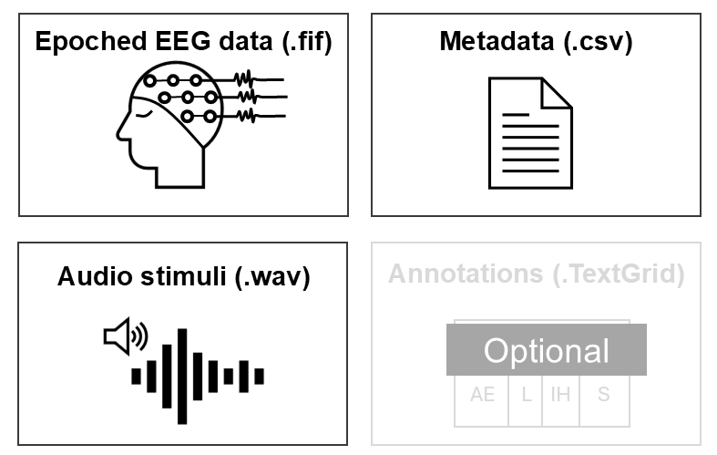

Getting started
For the TRF analysis, please prepare the following data components (see the NeuraSpeech Pipeline tab).

TextGrid annotations are required only if you want to use annotated stimulus features or events (e.g., phoneme onsets) as predictors.